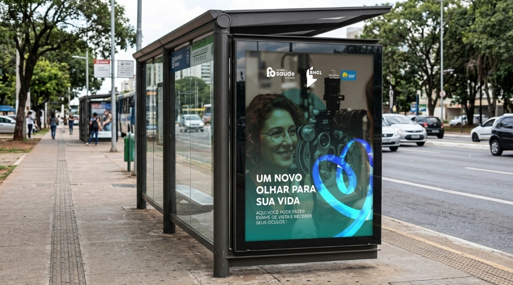
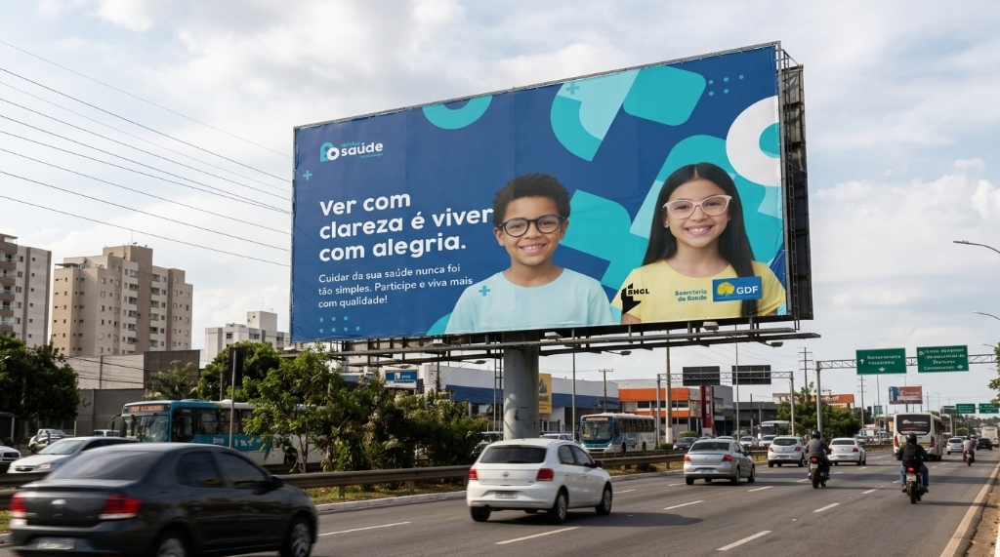
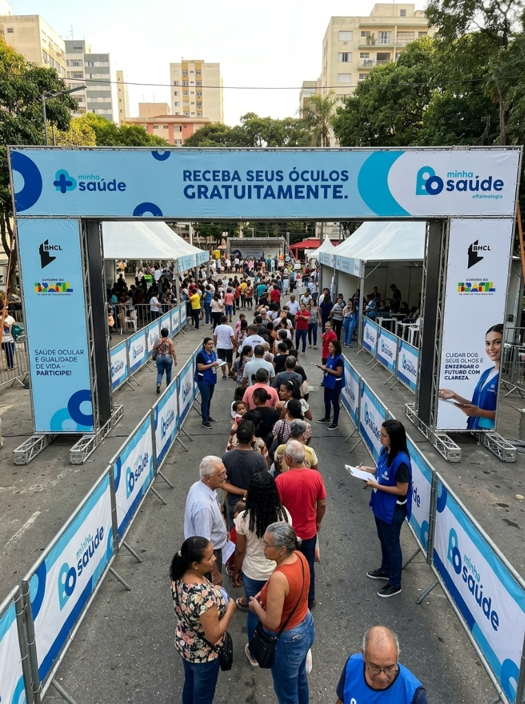
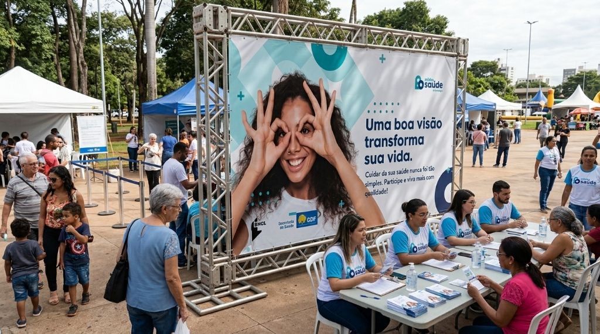
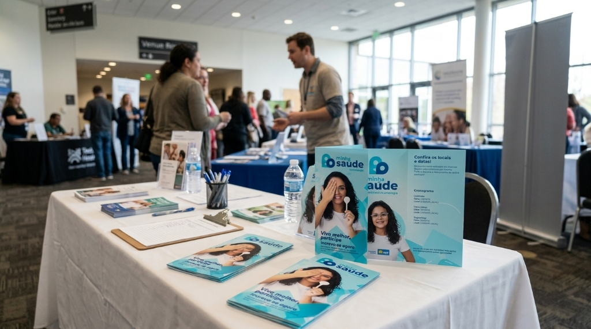

Ver com clareza.
Transformar realidades.
Uma campanha completa de comunicação visual e sinalização para o programa Minha Saúde Oftalmologia. Da mídia exterior de grande formato aos espaços de acolhimento e triagem, uma linguagem acessível, viva e mobilizadora criada para levar exames oftalmológicos e óculos gratuitos para milhares de famílias.

Saúde visual como
direito e cidadania.
Enxergar bem é essencial para o desenvolvimento escolar das crianças, para a autonomia profissional e para a convivência social. O programa Minha Saúde foi idealizado para democratizar o atendimento oftalmológico de qualidade, oferecendo consultas, exames de refração e a entrega gratuita de óculos de grau completos para a população.
O desafio de design foi conceber um sistema visual de forte reconhecimento institucional, mas que mantivesse um tom amigável, acolhedor e próximo. Cada peça de comunicação precisava conversar tanto com o pedestre na parada de ônibus quanto com motoristas em vias rápidas e as famílias que comparecem aos dias de atendimento.

Ciano, azul profundo
e a forma do olhar.
O símbolo do projeto conecta as curvas de uma armação de óculos com a cruz humanitária de saúde. A marca une o azul profundo para assegurar estabilidade institucional com o ciano luminoso para transmitir modernidade, energia e alívio.
Arcos gráficos e círculos concêntricos funcionam como guias de leitura nas composições, emoldurando rostos expressivos e conduzindo o olhar do público diretamente para a mensagem principal e as instruções de participação.

Estrutura monumental em box truss que orienta as filas e acolhe a população.

Painéis de palco, tendas e equipes uniformizadas integradas à identidade visual.
Acessibilidade
no centro.
Tipografia com peso marcante, contrastes cromáticos rigorosos e diagramação clara para facilitar a leitura de pessoas com dificuldades visuais.
Sinalização que
orienta e acolhe.
Pórticos de grande porte, grades envelopadas e testeiras que organizam o fluxo de milhares de cidadãos com segurança e respeito.
Celebração
do olhar.
Fotografia documental com sorrisos sinceros e gestos espontâneos que celebram a alegria transformadora de voltar a ver o mundo com clareza.
Informação clara
em cada ponto de contato.
Nos balcões de recepção e triagem, folders explicativos e folhas de agendamento detalham o cronograma dos exames, os documentos necessários e as datas de entrega dos óculos prontos.
A uniformidade gráfica entre coletes, crachás, mesas e impressos reforça a credibilidade da iniciativa pública e garante uma experiência ágil e humana para cada pessoa acolhida.
